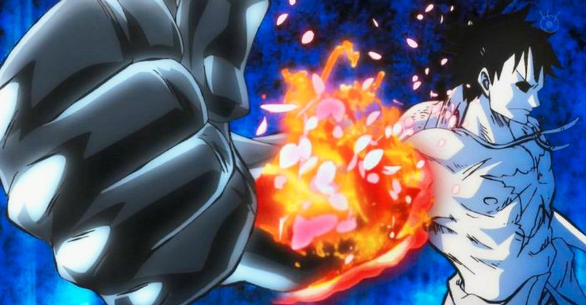
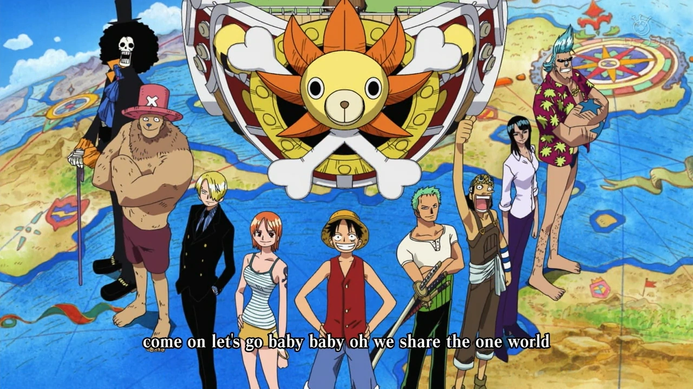
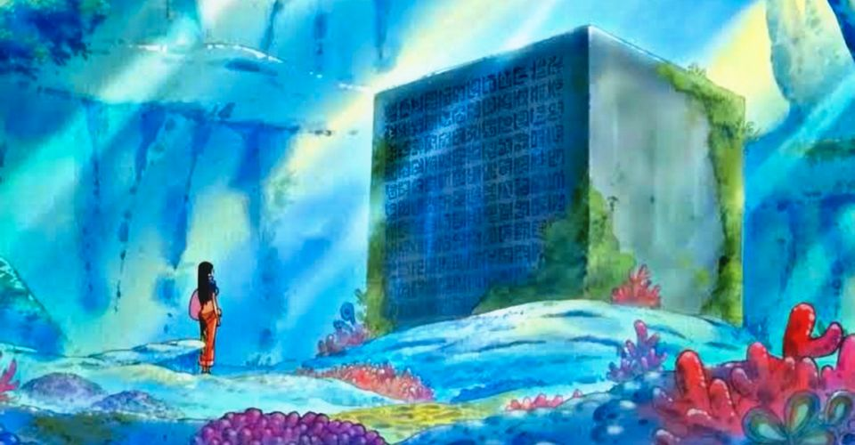
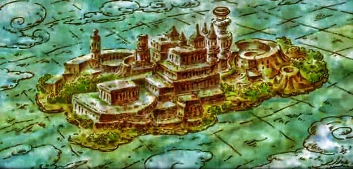
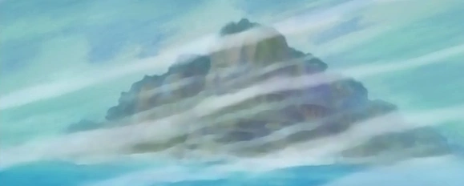
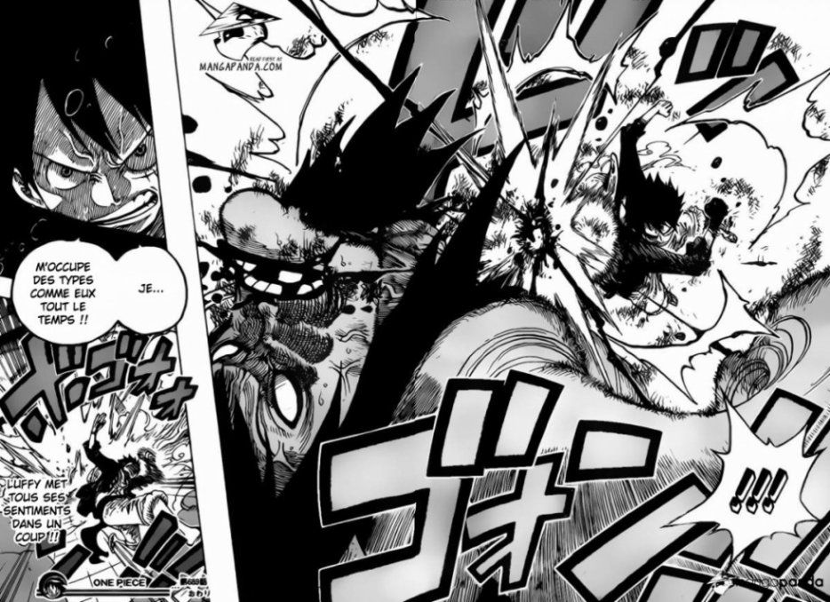

WIKIPIECE
WIKIPIECE
WIKIPIECE
WIKIPIECE
Power used by the spiritual energy of the user which which gives a mysterious power.
an Opening is the opening of the episode by a music appropriate to the anime.
writing in One Piece used during the forgotten century and are the only clues to understand the story.
100 years that have been erased by the world government for some mysterious reason.
Unique treasure, we don't know more about this treasure except that only one except that only one man found it: Gol D. Roger.

Last island of Grand line, the place where the One Piece the One Piece is.
A narrative arc is the construction of a plot that develops in a story from the a story from the beginning to the end of the story. denouement.
Name of the site, created with a mix of the famous site "Wikipedia" and "One Piece".

Word to designate a page in a manga.
